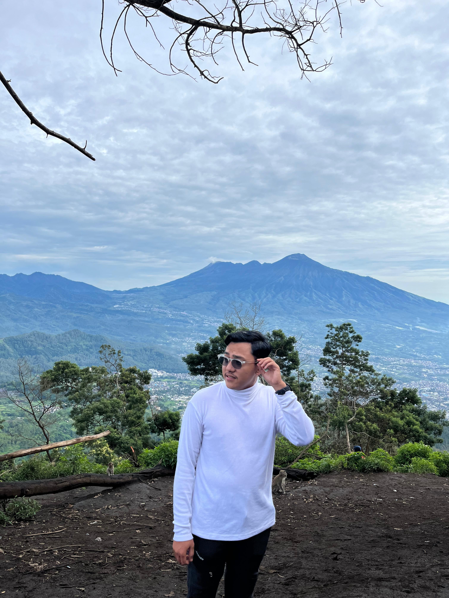

AI & Python Automation Engineer • Web Developer • Technical Writer
Pasuruan, Jawa Timur, Indonesia (Available Remote / Worldwide UTC+7)
Praktisi teknologi dan AI & Python Automation Engineer yang berfokus pada pembangunan sistem cerdas, aplikasi web modern, pengolahan basis data (SQL/SQLite), serta penulisan teknis dan esai analitis. Terbiasa menerjemahkan kebutuhan bisnis maupun teknis yang rumit menjadi solusi otomatis yang rapi, terukur, dan siap pakai—mulai dari Computer Vision, layanan backend REST API (FastAPI/Python), otomasi media, hingga dokumentasi dan lokalisasi dwibahasa (Inggris–Indonesia).
Sistem kendali kursor tanpa sentuhan tangan bagi pengguna berkebutuhan khusus menggunakan pelacakan 468 titik wajah (iris mata & ekspresi bibir). Dilengkapi algoritma Exponential Low-Pass Filter smoothing (α = 0.25) untuk meredam getaran kursor, model klasifikasi gestur klik real-time (gesture_model.pkl), kalibrasi otomatis, serta pencatatan telemetri ke CSV.
Arsitektur produksi konten video vertikal (1080x1920) otomatis dari hulu ke hilir: mulai dari penyusunan naskah terstruktur, sintesis suara neural (Edge-TTS) dengan ekstraksi penanda waktu per kata, pencampuran audio BGM ducking otomatis, perenderan takarir dinamis, hingga penjadwalan unggah OAuth 2.0 yang terhubung ke database SQLite.
Sistem orkestrasi latar belakang untuk pemrosesan batch aset digital, sinkronisasi data otomatis, manajemen antrean tugas (thread-safe SQLite WAL queue), dan pemantauan log produksi harian.
Dashboard MVP pemindaian teknologi WordPress, deteksi tema/plugin, dan audit keamanan non-intrusif.
Matriks Test Case fungsional/negatif & laporan bug terstruktur untuk sistem transaksi pembayaran digital.
Arsitektur REST API spesifikasi otomotif dengan antarmuka Semantic HTML/CSS murni berkecepatan tinggi.
Prototipe web korporat responsif dengan pencarian & filter katalog kandidat secara real-time + integrasi WhatsApp.
Template rekapitulasi kualitas kemasan 100 baris data dengan agregasi otomatis bulanan per kategori reject.
Sampel pembuatan soal penalaran figural berbasis vektor SVG murni serta pelabelan dataset NLP Bahasa Indonesia.
Respons cepat untuk diskusi proyek pengembangan web/Python, otomasi data, QA testing, maupun penulisan teknis & konten.